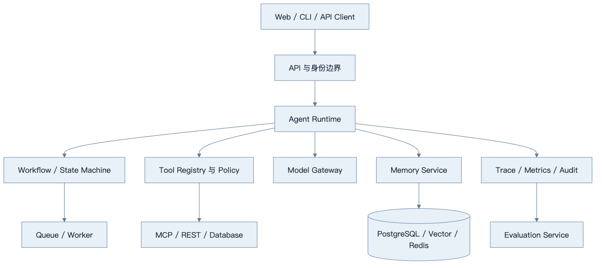
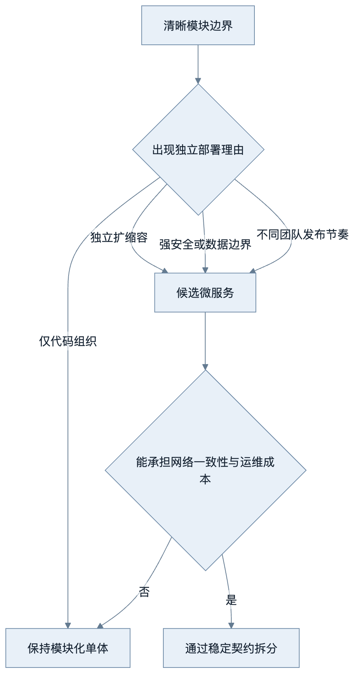
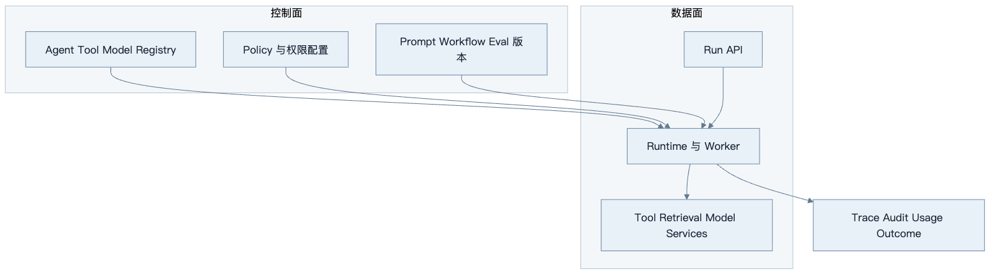
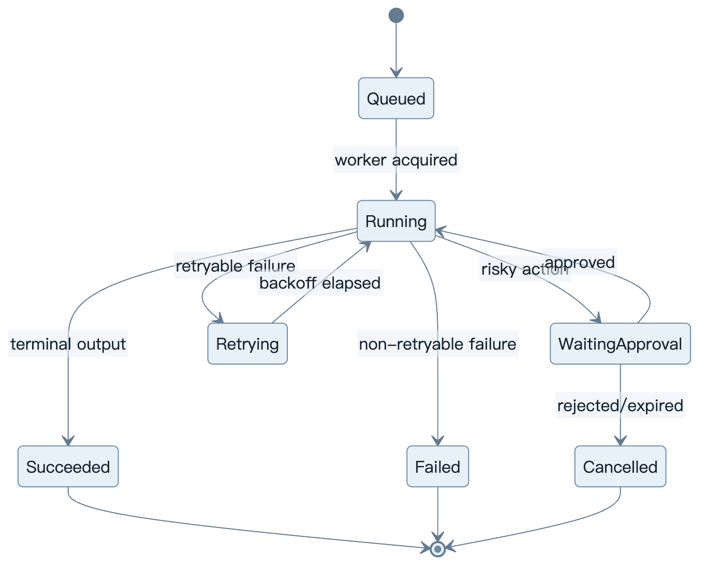
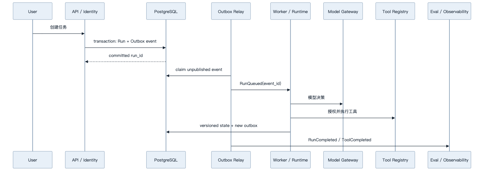
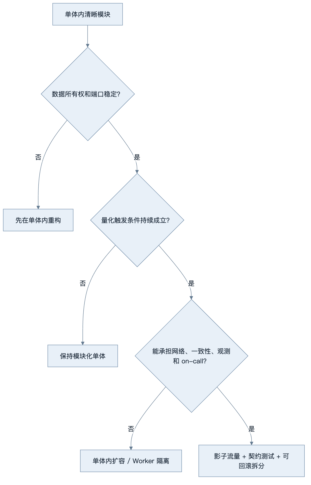

第36章：Agent 架构设计
最后核对日期：2026-07-11。
章节导读
Agent 架构的难点不是把模型、工具和向量库画在一张图里，而是划清状态、权限、故障和演进边界。本章从模块化单体出发，比较微服务、事件驱动、工作流引擎和状态机，最后给出企业级 Agent 平台的参考分层。
学习目标与前置知识
完成本章后，读者应能判断何时采用模块化单体或微服务；区分 Agent Runtime、Workflow Engine 与任务队列；设计 Tool Registry、Model Gateway、Memory、Evaluation 和 Observability 服务；用 ADR 记录架构决策。前置知识包括 HTTP、数据库事务、消息队列、容器与第 9、25、28 章。
核心概念：先确定边界，再选择部署形态
模块是职责边界，进程是部署边界，服务是组织与故障边界，三者并不等价。一个模块化单体可以拥有清楚的端口、适配器和依赖方向；一个拆成十个容器的系统也可能因为共享数据库和循环调用而成为“分布式单体”。
下面的参考架构按控制、能力、状态、执行与治理职责划分组件，而不是按框架名称拆服务。

图中 Runtime 负责一次运行的控制循环，Workflow 负责可恢复的步骤与状态迁移，Queue 负责把工作可靠交给执行者。三者可以先部署在一个进程中，但接口应独立，避免模型供应商对象渗透到业务层。

拆分必须解决已观察到的容量、故障、安全或组织问题；如果只是为了“先进”，通常会得到更难调试的分布式单体。

控制面发布不可变版本，数据面每次 Run 记录实际版本与主体。这样线上行为可复现，也能独立扩缩执行资源。
Modular Monolith 与 Microservices
早期产品通常优先模块化单体：同一事务容易维护，本地调试简单，部署与观测成本低。当某一模块需要独立扩缩容、具有不同安全等级、由独立团队负责，或故障不能影响主链路时，再把它拆成服务。例如文档解析需要大量 CPU/GPU 且处理不可信文件，适合独立 Worker；轻量会话读取未必需要单独服务。
拆分前至少回答四个问题：谁拥有数据，接口如何版本化，跨边界失败怎样补偿，调用链如何追踪。如果两个服务直接修改同一组表，它们没有真正的数据所有权；如果一次请求同步穿越七个服务，任何上游抖动都会放大尾延迟。
| 维度 | 模块化单体 | 微服务 |
|---|---|---|
| 一致性 | 本地事务较简单 | 常需最终一致与补偿 |
| 发布 | 一体发布 | 可独立发布但需兼容治理 |
| 调试 | 本地调用链清晰 | 依赖分布式 Trace |
| 扩缩容 | 按整体扩容 | 可按热点模块扩容 |
| 团队成本 | 较低 | 平台与运维成本较高 |
Event-Driven、Workflow Engine 与 State Machine
事件表达“已经发生的事实”，命令表达“希望执行的动作”。长任务可在状态提交后发布 RunStarted、ToolCompleted 等事件，由索引、计费和评估消费者异步处理。事件消费必须假设至少一次投递：使用事件 ID 去重，副作用工具使用幂等键，Schema 只能兼容演进。

状态机是 API、队列、Worker 与 UI 的共同契约。所有迁移采用乐观锁或事件版本，并保留终止原因。
状态机限定合法迁移；工作流引擎进一步提供持久化、定时器、重试、补偿、人工中断和历史回放。普通队列只保证任务交付，不能自动表达业务状态。不要用模型自由文本充当状态；状态应是版本化、可校验的数据。
Agent Runtime 与基础服务
Runtime 接收运行请求，装载策略和会话状态，调用模型与工具，记录每一步并判断终止。它不应直接保存供应商响应作为唯一状态，而应转换为内部事件。Tool Registry 保存工具 Schema、版本、所有者、风险等级、超时、幂等和授权规则；调用前后均执行策略检查。
Model Gateway 统一模型标识、凭证、超时、重试、配额、路由与降级，但不应抹平供应商独有语义。Memory Service 管理会话、摘要、长期记忆的写入与删除；Evaluation Service 用黄金集和线上抽样检测回归；Observability Service 汇聚 Trace、Token、成本、延迟和审计事件。
最小实验
下面的最小示例使用显式端口与适配器。它不展示完整 Tool Loop，而是验证领域 Runtime 不依赖供应商 SDK 对象，Fake 与生产 Adapter 可以替换。
from dataclasses import dataclass
from typing import Protocol
class ModelPort(Protocol):
async def generate(self, prompt: str, *, run_id: str) -> str: ...
class ToolPort(Protocol):
async def execute(self, name: str, arguments: dict[str, object], *, run_id: str) -> object: ...
@dataclass(frozen=True)
class RunRequest:
run_id: str
user_id: str
prompt: str
class AgentRuntime:
def __init__(self, model: ModelPort, tools: ToolPort) -> None:
self.model = model
self.tools = tools
async def run(self, request: RunRequest) -> str:
# 业务层依赖内部端口，不依赖具体 SDK 对象。
return await self.model.generate(request.prompt, run_id=request.run_id)
这个最小示例没有展示完整 Tool Loop，但明确了依赖方向。测试可注入 FakeModel，生产环境可接 OpenAI、Anthropic 或本地模型适配器。若只有一个实现且没有恢复或替换需求，也可以先用普通函数；端口应由真实变化驱动。
工程案例
项目 10 采用“模块化单体 API + 独立 Worker + PostgreSQL/Redis”的起点。API 处理身份与命令，Worker 执行长任务，Outbox 在事务提交后可靠发布事件。每个 Run 拥有稳定 ID、租户 ID、策略版本和输入快照；每个工具调用记录参数摘要、授权决定、耗时和结果引用。未来拆分 Model Gateway 或 Parser 时，内部端口保持不变。
模块化单体的内部边界
第一版可以只有一个可部署应用和一个 Worker 镜像，但代码与数据所有权按模块划分：
platform/
├── identity/ # 用户、租户与认证上下文
├── runs/ # Run 状态机、命令和 Checkpoint
├── runtime/ # 模型决策与 Tool Loop
├── model_gateway/ # 模型协议、配额、路由与 Usage
├── tool_registry/ # Tool 元数据、Policy 与执行适配器
├── knowledge/ # 摄取、Retriever 与引用
├── memory/ # 写入门禁、TTL 与删除
├── evaluation/ # Golden Dataset 与发布门禁
├── observability/ # Trace、Metrics 与 Audit 接口
└── infrastructure/ # PostgreSQL、Redis、HTTP Adapter
模块只通过公开端口交互，禁止跨模块直接修改表。单体部署仍可在一个数据库事务中更新 Run 并写 Outbox，减少初期分布式一致性成本。测试使用依赖规则或架构测试防止 knowledge 反向导入 API 层、Tool Adapter 绕过 Policy 等违规依赖。

图中的 Outbox 解决“数据库已提交但消息未发送”裂缝：业务状态与待发布事件在同一事务写入，Relay 用事件 ID 至少一次发布，消费者幂等去重。它不保证外部工具副作用自动一致；写 Tool 仍需要 action ID、状态核实和补偿。
Transactional Outbox 最小模型
from dataclasses import dataclass
from datetime import datetime
@dataclass(frozen=True)
class OutboxEvent:
event_id: str
aggregate_id: str
aggregate_version: int
event_type: str
payload: dict[str, object]
occurred_at: datetime
def idempotency_key(event: OutboxEvent, consumer: str) -> tuple[str, str]:
return consumer, event.event_id
实际数据库用唯一约束保证 (consumer, event_id) 只处理一次，并为 Relay 使用租约或 skip locked 类机制。事件只包含消费者所需字段和稳定引用，不能把完整 Prompt、Secret 或巨大模型响应广播到消息系统。Schema 带版本，并采用向后兼容演进。
Workflow Engine、Queue 与 Runtime 的责任
| 组件 | 回答的问题 | 保存的核心状态 | 不负责 |
|---|---|---|---|
| Queue | 哪个任务应交给哪个 Worker？ | 投递、租约、重试与死信 | 业务审批与合法状态迁移 |
| Workflow Engine | 长流程下一步是什么、何时恢复？ | 节点、定时器、Checkpoint、补偿 | 模型 Tool Calling 语义 |
| Agent Runtime | 当前决策如何在预算内执行？ | 消息投影、动作、Observation、终止 | 通用消息交付保证 |
| State Machine | 哪些业务状态转换合法？ | 状态、版本、原因 | 任务调度与模型推理 |
简单 Agent 可在 Runtime 中直接实现小状态机；跨天等待、多个审批、补偿和复杂定时器出现后，采用成熟 Workflow Engine 往往比用队列回调手写可靠。不能因为已经有 Redis Queue，就把业务状态藏在 Job 参数中。
服务拆分触发条件
是否拆分必须由观测证据支持。下面是候选阈值示例，团队应根据自身 SLO 改写，不能把数字当通用标准：
| 候选模块 | 可量化触发条件 | 拆分收益 | 新成本 |
|---|---|---|---|
| 文档 Parser | CPU/内存峰值影响 API SLO；需不可信文件沙箱 | 资源和安全故障隔离 | 队列、Artifact 与版本一致性 |
| Model Gateway | 多团队独立发布；调用量需单独扩缩；统一配额成为瓶颈 | 集中路由与凭证治理 | 网络跳、单点与供应商能力抽象 |
| Tool Executor | 高风险工具需更强网络/Secret 边界 | 最小权限与审计隔离 | 分布式授权、幂等和延迟 |
| Evaluation | 大批离线任务挤占在线 Worker | 独立容量与发布节奏 | 数据快照和结果一致性 |
| Memory | 单独法规保留、地域或删除 SLO | 数据治理边界清晰 | 跨服务一致性和检索延迟 |
仅“代码很多”“想用不同框架”或“微服务更企业级”不是拆分触发条件。至少观察两个发布周期，并确认模块有清晰所有者、独立数据和稳定契约。拆分前先在单体内部建立端口与契约测试，拆出后接口语义才不会临时发明。

拆分采用绞杀式迁移：新服务先镜像或只读，比较结果；再切少量租户；保留回退到单体 Adapter 的开关。数据库所有权切换要有双写或事件迁移方案，但双写只能短期存在且需一致性验证。
故障处理遵循边界：模型超时可有限重试；非幂等工具超时先查询执行状态，不能盲目重放；数据库不可用时停止产生新副作用；观测系统故障不能泄漏敏感内容，也不能无限阻塞主链路。
失败分析与调试
常见误区包括把微服务等同于企业级、把消息队列等同于工作流引擎、让所有服务共享管理员凭证、用一个巨大 agent_state JSON 掩盖数据模型。调试时先用 run_id 还原时间线，再检查状态迁移、策略版本、模型请求、工具幂等键和事件消费偏移。对偶发问题保存脱敏输入快照与依赖版本，而不是只保存最终答案。
| 症状 | 架构根因 | 证据 | 修复 |
|---|---|---|---|
| 一个模型故障拖垮全部 API | 同步调用、无隔离与截止时间 | Trace、连接池、P95 | Queue/Worker 隔离和有界降级 |
| 事件重复导致重复收费 | 消费者假设 exactly-once | event ID 与消费记录 | 幂等消费者和业务唯一键 |
| 服务拆分后仍同时改一张表 | 没有数据所有权 | SQL 审计与部署依赖 | 先明确聚合与迁移契约 |
| Run 卡在“运行中” | Queue 状态代替业务状态 | Worker 租约与 Run version | 显式状态机、租约过期恢复 |
| Trace 无法跨服务关联 | run/tool/event ID 未传播 | span links 与消息头 | 统一 correlation contract |
| Model Gateway 成单点 | 集中过多同步职责 | 容量、错误率与依赖图 | 无状态扩缩、旁路与降级 |
| 删除用户数据不完整 | Memory、RAG、Trace 各自复制 | 删除清单与验证报告 | 治理事件和各服务删除证明 |
分布式调试按“命令—状态提交—Outbox—投递—消费—副作用—Checkpoint”还原时间线。时间戳只辅助排序，事件 ID、aggregate version 与因果链接才是主要依据。不要通过直接修改数据库把任务强行标成功，这会破坏审计与恢复假设。
工程实践与安全注意事项
为每个边界定义 SLO、所有者和容量；接口采用契约测试；事件 Schema 只做向后兼容变更；数据库迁移与应用发布可回滚。每个服务重新鉴权，服务凭证遵循最小权限，租户 ID 必须参与所有数据查询。外部工具位于出站代理和 Allowlist 后，不可信解析器运行在 Sandbox。审计日志追加写并设置独立保留策略。
本章总结
Agent 架构的可维护性来自明确职责、可恢复状态、受控副作用和端到端证据链。部署形态应服从故障域与组织需求，不能反过来决定业务边界。
课后练习、面试问题与延伸阅读
- 把项目 10 分别画成模块化单体与微服务方案，并写出拆分触发条件。
- 为
ToolCompleted设计可兼容演进的事件 Schema 和去重策略。 - 面试问题：何时拆分 Model Gateway？Workflow Engine、Queue 与 Runtime 有何不同？如何避免分布式单体？
- 延伸阅读：领域驱动设计、Transactional Outbox、状态机、工作流引擎、OpenTelemetry 与零信任服务架构。
本章对应代码目录：projects/10-enterprise-platform/。
练习参考答案
- 项目 10 的模块化单体方案保留一个 API 与 Worker 代码库、模块私有表和事务 Outbox；微服务方案可先只拆 Parser。拆分条件包括 Parser 资源峰值持续破坏 API SLO、需要更强文件沙箱且接口/数据所有权稳定。保留单体 Parser Adapter 作为回滚路径。
ToolCompleted事件包含 event ID、run ID、tool call ID、工具版本、状态、结果引用、耗时和 aggregate version，不广播敏感参数正文。消费者以(consumer, event_id)去重，新字段可选并向后兼容，破坏性变化发布新事件版本。- Model Gateway 在多团队需要统一配额/凭证、独立扩缩与发布，且其故障需要隔离时拆分。若只是一个应用调用两个模型，模块内 Adapter 往往足够。
- Workflow Engine 保存长流程节点、定时器、中断和恢复；Queue 负责可靠交付；Runtime 执行一次 Agent 决策循环。三者可以同进程，但状态契约不能混为一个 Job JSON。
- 避免分布式单体需要服务拥有自己的数据、接口向后兼容、调用链不过度同步、失败可独立处理并有端到端 Trace。若服务必须同时部署、共享表和互相循环调用，拆分没有获得真正自治。
本章引用
以下资料用于支撑本章的核心原理、工程边界与版本敏感说明：